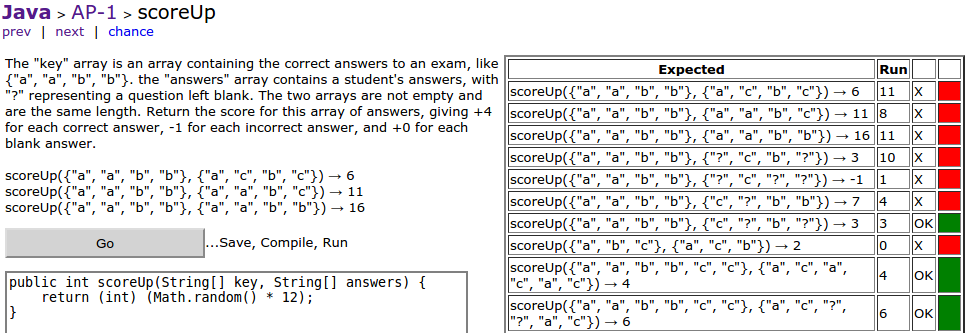

James Madison University, Fall 2017 Semester
Lab18: Final round of CodingBat

Instructions
In Ecipse, create a new project named Lab18. Download the CodingBatAP1.java file and move it into your Workspace/Lab18 directory (doing that will add it to your project automatically).
-
Remember to log into CodingBat before doing any problems so you will receive credit. There will be nothing to turn in via Canvas today, but there is a Web-CAT submission for extra credit.
-
Solve as many AP-1 problems as you can during the lab period. These problems are good practice for the logic/loop/array aspects of the course.
-
You will receive two points for each problem solved (10 points max). Your grade will come directly from CodingBat – so again, make sure you're logged in!
We strongly recommend you also complete the following section, especially if you are interested in using Eclipse on PA5, PA6, and/or the final exam. It won't take that long, and it will be worth it!
Part 2 - Eclipse Plugins (optional)
One of the great advantages of using Eclipse is the rich third-party plugin library that exists. Plugins are developed and maintained by other users and organizations, and they are freely available. This next section will walk through setting up some of the plugins we use in CS 149 and CS 159.
JUnit
-
Select File -> New -> Other -> Junit Test Case. Select "New JUnit 3 test" (that's what we've been using this semester) and name your class CodingBatAP1Test. Click Next, and select the six AP-1 methods to create stubs.
-
To save you some busy work, copy the contents of this CodingBatAP1Test.java file into your new test file.
-
To run JUnit tests, select Run -> RunAs -> JUnit Test. This will test your methods using CodingBatAP1Test.
-
Finish writing test cases for your program. Get all six working 100% and submit to Web-CAT for extra credit.
Checkstyle
-
Go to Help -> Eclipse marketplace, find the Checkstyle plugin, and click the Install button.
-
Configure checkstyle to use our cs149.xml by going to Window -> Preferences -> Checkstyle and importing the cs149.xml as an External Configuration file. (Click New, select the Type, name it cs149, and Browse to the location of cs149.xml.)
-
Go to the Package Explorer panel (on the left), right-click your project, and select Checkstyle -> Activate Checkstyle to get comments in your main code window. You will need to repeat this last step for each project in the future; it's not enabled by default.
Fomatter
When you press Ctrl+Shift+F to format your code, it uses the built-in style definitions. They don't match our Checkstyle configuration, but they are easy to customize.
-
Go to Window -> Preferences -> Java -> CodeStyle -> Formatter, and then do an import of our cs149-formatter.xml file. (We suggest you download this file to your workspace directory, so it's easy to find.)
EclEmma
-
Go to Help -> Eclipse Marketplace, find EclEmma, and click Install. This plugin will allow you to run 'Code Coverage' tests (like Web-CAT does) against your program to see the coverage of your test files against your code.
-
You can now run coverage tests against your program by clicking the Coverage button on the toolbar, or by going to Run -> Coverage from the menu bar.